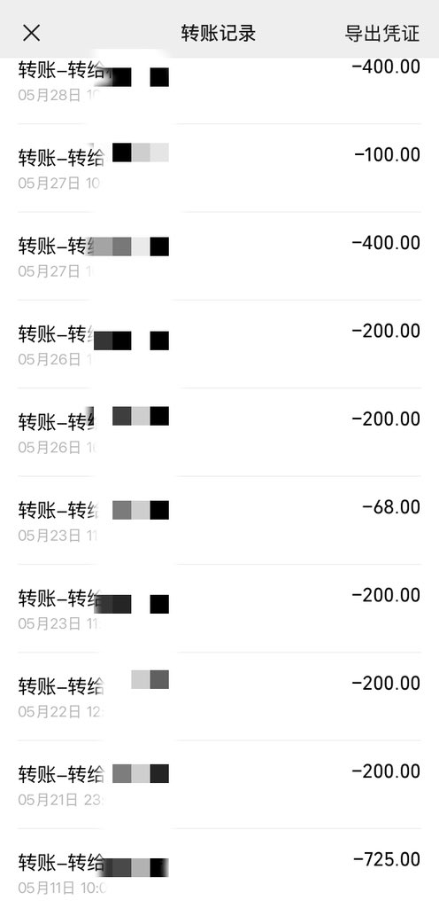

☯️🧬無極电竞/ADHD 葉經理
@LanwujiDrink
@Greenfish_111 什么兴奋剂🤔

冰冷電子魚
@Greenfish_111
24年是我最魔怔的一年 当时赚的钱全买药了 爱玩兴奋剂
但之后没多久就和那个卖家失联了。不清楚当时玩的成分是啥 也可能当时玩太多了 总之感觉别的很多药相比之下都有点没意思了 加上经济不富裕感觉性价比不高 于是自此以后基本不怎么玩了
其实这几年下来 在这方面总共花费才不到一万 就如此自律😼 https://t.co/08sjfDmhlJ